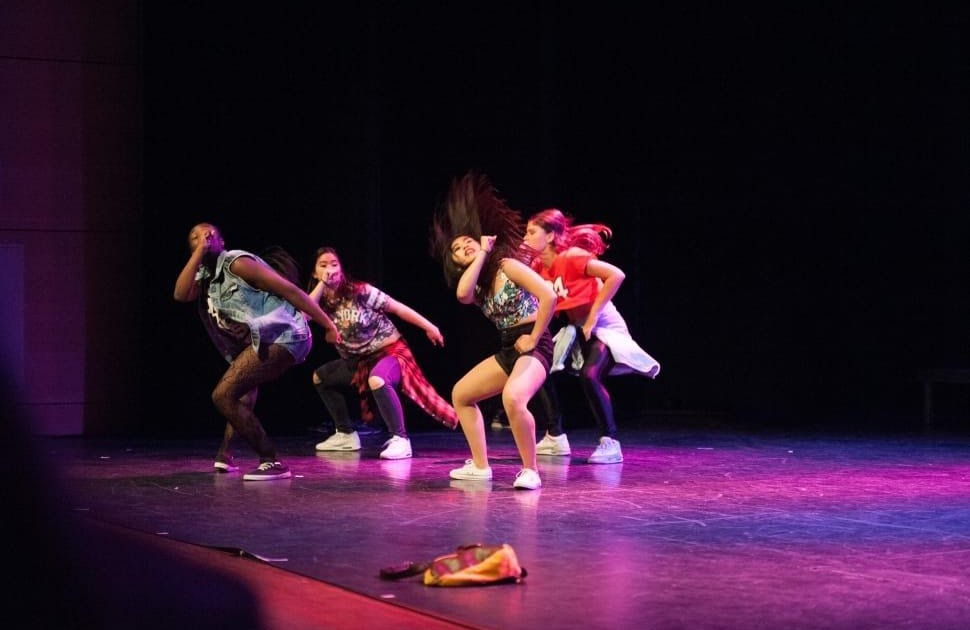
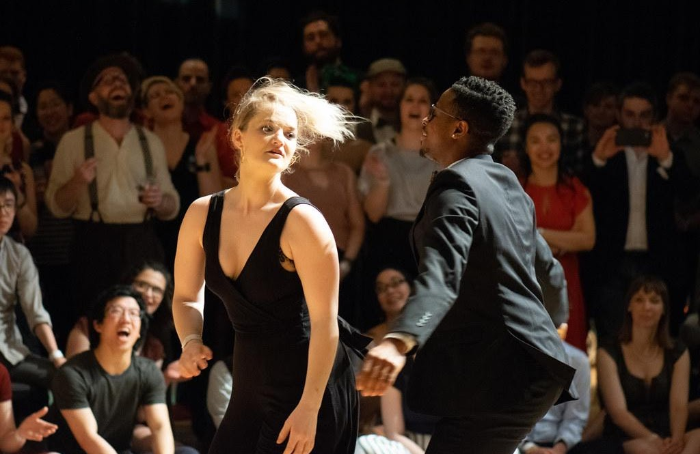
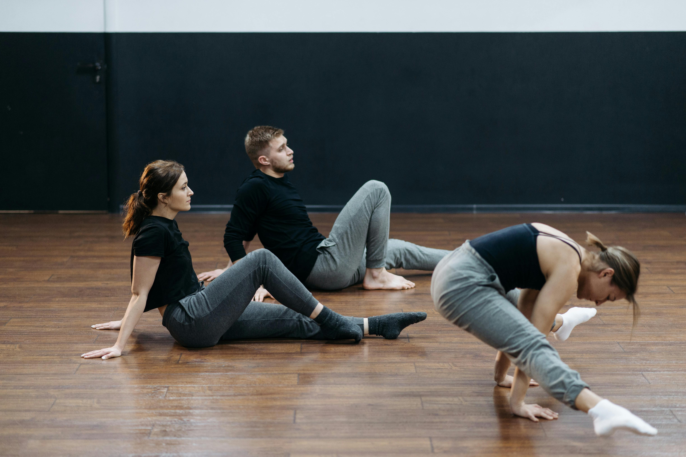

Hip Hop • Jazz • Contemporary • Heels • Ballet • Tap • Ballroom
The Lowcountry's Dance Studio Scene
Charleston's adult dance class scene is larger and more varied than most people realize. Whether you're a complete beginner looking to try something new, a returning dancer picking back up after years away, or an experienced mover training for performance — studios across West Ashley, downtown, North Charleston, Mount Pleasant, and Summerville have a class for you.
From industry-style hip hop at The Dance Space on the downtown peninsula to adult-only movement classes at Dance Lab Charleston in West Ashley and The Loft in North Charleston — the options span every style, schedule, and skill level the Lowcountry has to offer.

Where to Train in Charleston's Two Hottest Adult Dance Styles
Charleston's adult hip hop dance class scene has grown steadily and now spans multiple studios across the metro. The Dance Space — a Black-owned, woman-owned studio in downtown Charleston — offers Industry Hip-Hop classes described as fast-paced, street-style movement focused on performance quality, dynamics, and individual style. They emphasize hip hop as a culture with deep roots in African American and Hispanic communities, not just a dance style.
Dance Lab Charleston in West Ashley and its sister studio The Loft in North Charleston form an adults-only network where hip hop, heels, and commercial styles are taught in a judgment-free environment. Both share a single membership, so you can book freely across both locations. Holy City Dance Center serves teens and adults in Charleston and Summerville, with recreational and competitive hip hop programs. Dance Conservatory of Charleston offers leveled hip hop from beginner through advanced, including jazz funk, tutting, and commercial styles at the advanced tier.
Charleston's jazz dance class offerings cover everything from foundational technique to Broadway-style performance work. Dance Conservatory of Charleston — whose founder and faculty trained at the School of American Ballet and performed with New York City Ballet — offers multi-level jazz classes for adults, including Broadway, contemporary jazz, and commercial jazz at the advanced level. Their alumni have gone on to the Rockettes, Broadway, and the NYCB.
Dance Moves of Charleston on James Island offers adult jazz with a classic technique approach — strong lines, dynamic combinations, and no-pressure entry for beginners and returners. The Dance Arts Studio in the Lowcountry covers jazz alongside contemporary, musical theatre, and hip hop for adult students. The Dance Space downtown also weaves jazz vocabulary into its commercial and contemporary offerings for adult classes.
Charleston SC — Where to Take Adult Dance Classes
Dance Lab Charleston in West Ashley (1660 Sam Rittenberg Blvd) is an adults-only movement studio built around the philosophy of dancing for joy, not perfection. Its sister space, The Loft in North Charleston, shares the same membership — one subscription, two locations, book freely between them. Both studios are consistently ranked at the top of Yelp's Charleston dance studio list.
Classes cover hip hop, heels, jazz, Latin, and more. The studio's tagline says it best: "Dance classes formulated to light up your life and set your soul on fire."
A locally Black-owned and woman-owned studio located in downtown Charleston, The Dance Space (chsdancespace.com) offers adult classes from beginner through advanced across hip hop, contemporary, commercial dance, and ballet. Their Industry Hip-Hop and Commercial classes are particularly well-regarded — along with "Movement Mends," a body-mind contemporary class described as healing through movement.
The studio follows Charleston County school inclement weather policy, meaning it's embedded in the local community, not just a drop-in gym.
Dance Conservatory of Charleston is the city's premier classical and technical training studio — founded by faculty trained at the School of American Ballet who went on to perform with the New York City Ballet. They offer ballet, jazz, tap, hip hop, modern, and contemporary for all ages including adults, with leveled curricula from beginner through pre-professional.
Alumni have gone on to NYCB, the Rockettes, and Broadway. If you want the highest-level technical training Charleston offers, this is the studio.
Dance Moves of Charleston on James Island is built specifically for adults 18+ — no auditions, no experience required. Classes cover hip hop, contemporary, tap, jazz, and ballet in a welcoming, no-pressure environment. Their adult hip hop is described as "high energy and low pressure," focused on confidence and fun rather than technique anxiety.
Adults from Summerville and across James Island have found this studio to be the most accessible re-entry point into dance — especially for those who danced when they were younger and want to return.
International Ballroom Dance Studios has been serving the greater Charleston area since 2006 with NDCA-certified instructors across waltz, tango, foxtrot, rumba, cha-cha, swing, and salsa. They offer private lessons, group classes, and regular social dance parties — making them the most complete ballroom option in the metro. Two convenient Lowcountry locations.
Whether you're preparing for a wedding first dance, working toward competitive ballroom, or just want a social environment to dance in — International Ballroom is the Charleston standard for the style.
Arthur Murray Charleston at 1300 Savannah Highway is one of the most recognized names in social and ballroom dance instruction nationwide, and the Charleston location brings that pedigree to the Lowcountry. Specialties include tango, salsa, swing, cha-cha, and wedding first dance preparation. Instructors compete nationally and internationally.
The studio offers free trial classes for newcomers and custom lesson pacing — step-by-step at your own speed. Open Tuesday through Saturday, with evening hours on weekdays for working adults.


Whether you're into high-energy hip hop, the technical challenge of jazz, the elegance of ballroom, or the freedom of contemporary — Charleston has a studio, an instructor, and a class time that fits your life. The Lowcountry's adult dance scene has never been bigger or more accessible than it is right now.
No experience needed at most studios listed here. Most offer trial classes, drop-in options, or introductory rates. The best move is just showing up for the first one.